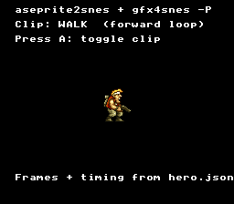

|
OpenSNES
Modern Open-Source SNES Development SDK
|
|
OpenSNES
Modern Open-Source SNES Development SDK
|

An animated 32×48 hero metasprite whose every byte of data is generated from a single Aseprite project — no hand-written frame tables, no hand-typed animation clips. This is the working reference for the two-tool sprite pipeline:
gfx4snes owns the pixels and the metasprite geometry; aseprite2snes owns the timeline (tags, per-frame durations, direction). They meet at the frame value: a clip's frame i selects hero_metasprites[i], resolved inline by animTickMeta() and drawn with oamDrawMeta().
The artist authored two tags in Aseprite — walk (forward loop) and wave (ping-pong) — with per-frame millisecond durations. aseprite2snes converted those to ticks and folded the ping-pong into the frame order. Press A to toggle between the two generated clips.
The build runs the full pipeline automatically: gfx4snes -P on res/hero.png and aseprite2snes on res/hero.json, then compiles main.c (which #includes both generated files).
console, sprite, dma, text, text4bpp, background, input, anim